VINS-Mono: A Robust and Versatile Monocular Visual-Inertial State Estimator
Tong Qin , Peiliang Li , and Shaojie Shen
Abstract—One camera and one low-cost inertial measurement unit (IMU) form a monocular visual-inertial system (VINS), which is the minimum sensor suite (in size, weight, and power) for the metric six degrees-of-freedom (DOF) state estimation. In this paper, we present VINS-Mono: a robust and versatile monocular visual-inertial state estimator. Our approach starts with a robust procedure for estimator initialization. A tightly coupled, nonlinear optimization-based method is used to obtain highly accurate visual-inertial odometry by fusing preintegrated IMU measurements and feature observations. A loop detection module, in combination with our tightly coupled formulation, enables relocalization with minimum computation. We additionally perform 4- DOF pose graph optimization to enforce the global consistency. Furthermore, the proposed system can reuse a map by saving and loading it in an efficient way. The current and previous maps can be merged together by the global pose graph optimization. We validate the performance of our system on public datasets and real-world experiments and compare against other state-of-the-art algorithms. We also perform an onboard closedloop autonomous flight on the microaerial-vehicle platform and port the algorithm to an iOS-based demonstration. We highlight that the proposed work is a reliable, complete, and versatile system that is applicable for different applications that require high accuracy in localization. We open source our implementations for both PCs (https://github.com/HKUST-Aerial-Robotics/VINS-Mono) and iOS mobile devices (https://github.com/HKUST-Aerial-Robotics/VINS-Mobile).
Index Terms—Monocular visual-inertial systems (VINSs), state estimation, sensor fusion, simultaneous localization and mapping.
I. INTRODUCTION
TATE ESTIMATION is undoubtedly the most fundamental module for a wide range of applications, such as robotic
navigation, autonomous driving, virtual reality, and augmented
reality (AR). Approaches that use only a monocular camera have
gained significant interests in the field due to their small size,
low-cost, and easy hardware setup [1]–[5]. However, monocu-
lar vision-only systems are incapable of recovering the metric scale, therefore, limiting their usage in real-world robotic applications. Recently, we have seen a growing trend of assisting the monocular vision system with a low-cost inertial measurement unit (IMU). The primary advantage of this monocular visualinertial system (VINS) is to observe the metric scale, as well as roll and pitch angles. This enables navigation tasks that require metric state estimations. In addition, the integration of IMU measurements can dramatically improve the motion-tracking performance by bridging the gap between losses of visual tracks due to illumination change, textureless area, or motion blur. The monocular VINS is not only widely available on ground robots and drones, but also practicable on mobile devices. It has great advantages in size, weight and power consumption for self and environmental perception.
However, several issues affect the usage of monocular VINS. The first one is rigorous initialization. Due to the lack of direct distance measurements, it is difficult to directly fuse the monocular visual structure with inertial measurements. Also recognizing the fact that VINSs are highly nonlinear, we see significant challenges in terms of estimator initialization. In most cases, the system should be launched from a known stationary position and moved slowly and carefully at the beginning, which limits its usage in practice. Another issue is that the long-term drift is unavoidable for visual-inertial odometry (VIO). In order to eliminate the drift, loop detection, relocalization, and global optimization has to be developed. Except for these critical issues, the demand for map saving and reuse is growing.
To address all these issues, we propose VINS-Mono, a robust and versatile monocular visual-inertial state estimator, which is the combination and extension of our three previous works [6]–[8]. VINS-Mono contains following features:
1) robust initialization procedure that is able to bootstrap the system from unknown initial states;
2) tightly coupled, optimization-based monocular VIO with camera–IMU extrinsic calibration and IMU bias correction;
3) online relocalization and four degrees-of-freedom (DOF) global pose graph optimization;
4) pose graph reuse that can save, load, and merge multiple local pose graphs.
Among these features, robust initialization, relocalization, and pose graph reuse are our technical contributions, which come from our previous works [6]–[8]. Engineering contributions include open-source system integration, real-time demonstration for drone navigation, and mobile applications. The whole system has been successfully applied to small-scale AR scenarios, medium-scale drone navigation, and large-scale stateestimation tasks, as shown in Fig. 1.
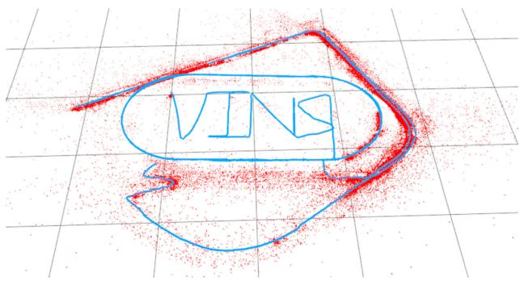
(a)
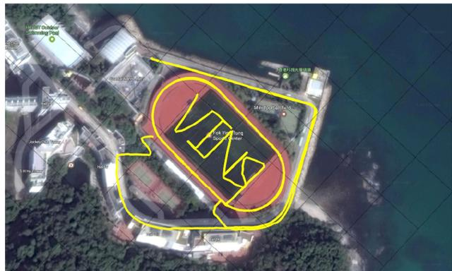
(b)
Fig. 1. Outdoor experimental results of the proposed monocular visual-inertial state estimator. Data are collected by a hand-held monocular camera–IMU setup under normal walking condition. It includes two complete circles inside the field and two semicircles on the nearby driveway. Total trajectory length is 2.5 km. A video of the experiment can be found in the multimedia attachment. (a) Trajectory (blue) and feature locations (red). (b) Trajectory overlaid with Google map for visual comparison.
The rest of this paper is structured as follows. In Section II, we discuss the relevant literature. We give an overview of the complete system pipeline in Section III. Preprocessing steps for both visual and preintegrated IMU measurements are presented in Section IV. In Section V, we discuss the estimator initialization procedure. A tightly coupled, self-calibrating, nonlinear optimization-based monocular VIO is presented in Section VI. Tightly coupled relocalization is presented in Section VII. Global pose graph optimization and reuse is discussed in Section VIII. Experimental results are shown in Section IX. Finally, this paper is concluded with the discussion and possible future research directions in Section X.
II. RELATED WORK
Scholarly works on monocular vision-based state estimation/odometry/SLAM are extensive. Noticeable approaches include PTAM [1], SVO [2], LSD-SLAM [3], DSO [5], and ORB-SLAM [4]. It is obvious that any attempts to give a full relevant review would be incomplete. In this section, however, we skip the discussion on vision-only approaches, and only focus on the most relevant results on the monocular visual-inertial state estimation.
The simplest way to deal with visual and inertial measurements is loosely coupled sensor fusion [9], [10], where the IMU is treated as an independent module to assist the visual structure. Fusion is usually done by the extended Kalman filter (EKF), where the IMU is used for state propagation and the visiononly pose is used for the update. Further on, tightly coupled visual-inertial algorithms are either based on the EKF [11]– [13] or graph optimization [14]–[19], where camera and IMU measurements are jointly optimized from the raw measurement level. A popular EKF-based VIO approach is MSCKF [11], [12]. The MSCKF maintains several previous camera poses in the state vector, and uses visual measurements of the same feature across multiple camera views to form multiconstraint update. SR-ISWF [20], [21] is an extension of MSCKF. It uses the square-root form [14] to achieve single-precision representation and avoid poor numerical properties. This approach employs the inverse filter for iterative relinearization, making it equal to optimization-based algorithms. The batch graph optimization or bundle adjustment techniques maintain and optimize all measurements to obtain the optimal state estimates. To achieve constant processing time, graph-based VIO methods [15], [17], [18] usually optimize over a bounded-size sliding window of recent states by marginalizing out past states and measurements. Due to high computational demands of iterative solving of nonlinear systems, few graph-based methods can achieve real-time performance on resource-constrained platforms, such as mobile phones.
For visual measurement processing, algorithms can be categorized into either direct or indirect methods according to the definition of residual models. Direct approaches [2], [3], [22] minimize photometric error, while indirect approaches [12], [15], [17] minimize the geometric displacement. Direct methods require a good initial guess due to their small region of attraction, while indirect approaches consume extra computational resources on extracting and matching features. Indirect approaches are more frequently found in the real-world engineering deployment due to its maturity and robustness. However, direct approaches are easier to be extended for dense mapping as they are operated directly on the pixel level.
The IMUs usually acquire data at a much higher rate than the camera. Different methods have been proposed to handle the high-rate IMU measurements. The most straightforward approach is to use the IMU for state propagation in EKF-based approaches [9], [11]. In a graph optimization formulation, an efficient technique called IMU preintegration is developed in order to avoid the repeated IMU reintegration. This technique was first introduced in [23], which parameterize the rotation error using Euler angles. Shen et al. [16] derived the covariance propagation using continuous-time error-state dynamics. The preintegration theory was further improved in [19] and [24] by adding posterior IMU bias correction.
Accurate initial values are crucial to bootstrap any monocular VINS. A linear estimator initialization method that leverages relative rotations from the short-term IMU preintegration was proposed in [17] and [25]. This method fails to model gyroscope bias and image noise in raw projection equations. A closed-form solution to the monocular visual-inertial initialization problem was introduced in [26]. Later, an extension to this closed-form solution by adding a gyroscope bias calibration was proposed in [27]. These approaches fail to model the uncertainty in inertial integration since they rely on the double integration of IMU measurements over an extended period of time. In [28], a reinitialization and failure recovery algorithm based on SVO [2] was proposed. An additional downward-facing distance sensor is required to recover the metric scale. An initialization algorithm built on top of the popular ORB-SLAM [4] was introduced in [18]. It is reported that the time required for the scale convergence can be longer than 10 s. This can pose problems for robotic navigation tasks that require scale estimates right at the beginning.
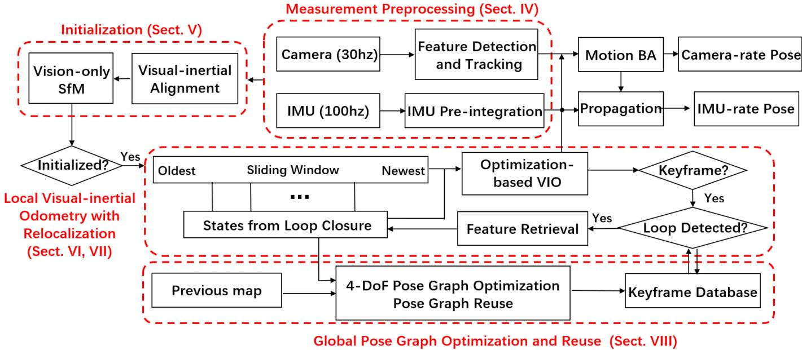
Fig. 2. Block diagram illustrating the full pipeline of the proposed monocular VINS. The system starts with measurement preprocessing (see Section IV). The initialization procedure (see Section V) provides all necessary values for bootstrapping the subsequent nonlinear optimization-based VIO. The VIO with relocalization modules (see Sections VI and VII) tightly fuses preintegrated IMU measurements, feature observations, and redetected features from the loop closure. Finally, the pose graph module (see Section VIII) performs global optimization to eliminate drift and achieve reuse purpose.
Odometry approaches, regardless the underlying mathematical formulation that they rely on, suffer from long-term drifting in global translation and orientation. To this end, loop closure plays an important role in long-term operations. ORB-SLAM [4] is able to close loops and reuse the map, which takes advantage of bag-of-words [29]. A 7-DOF [30] (position, orientation, and scale) pose graph optimization is followed loop detection.
III. OVERVIEW
The structure of the proposed monocular visual-inertial state estimator is shown in Fig. 2. The system starts with measurement preprocessing (see Section IV), in which features are extracted and tracked, and IMU measurements between two consecutive frames are preintegrated. The initialization procedure (see Section V) provides all necessary values, including, pose, velocity, gravity vector, gyroscope bias, and three-dimensional (3-D) feature location, for bootstrapping the subsequent nonlinear optimization-based VIO. The VIO (see Section VI) with relocalization (see Section VII) modules tightly fuses preintegrated IMU measurements, feature observations. Finally, the pose graph optimization module (see Section VIII) takes in geometrically verified relocalization results, and perform global optimization to eliminate the drift. It also achieves the pose graph reuse. The VIO and pose graph optimization modules run concurrently in separated threads.
In comparison to OKVIS [15], a state-of-the-art VIO algorithm, which is suitable for stereo cameras, our algorithm is specifically designed for the monocular camera. So, we particularly propose an initialization procedure, keyframe selection criteria, and use and handle a large field-of-view (FOV) camera for the better tracking performance. Furthermore, our algorithm presents a complete system with a loop closure and pose graph reuse modules.
We now define notations and frame definitions that we use throughout this paper. We consider as the world frame. The direction of the gravity is aligned with the z-axis of the world frame. is the body frame, which we define to be the same as the IMU frame. is the camera frame. We use both rotation matrices R and Hamilton quaternions q to represent rotation. We primarily use quaternions in state vectors, but rotation matrices are also used for the convenience rotation of 3-D vectors. and are rotation and translation from the body frame to the world frame. is the body frame while taking the kth image. is the camera frame while taking the kth image. ⊗ represents the multiplication operation between two quaternions. is the gravity vector in the world frame. Finally, we denote as the noisy measurement or estimation of a certain quantity.
IV. MEASUREMENT PREPROCESSING
This section presents preprocessing steps for both inertial and monocular visual measurements. For visual measurements,
we track features between consecutive frames and detect new features in the latest frame. For IMU measurements, we preintegrate them between two consecutive frames.
A. Vision Processing Front End
For each new image, existing features are tracked by the KLT sparse optical flow algorithm [31]. Meanwhile, new corner features are detected [32] to maintain a minimum number (100– 300) of features in each image. The detector enforces a uniform feature distribution by setting a minimum separation of pixels between two neighboring features. Two-dimensional (2-D) features are first undistorted, and then, projected to a unit sphere after passing outlier rejection. Outlier rejection is performed using RANSAC with a fundamental matrix model [33].
Keyframes are also selected in this step. We have two criteria for the keyframe selection. The first one is the average parallax apart from the previous keyframe. If the average parallax of tracked features is between the current frame and the latest keyframe is beyond a certain threshold, we treat frame as a new keyframe. Note that not only translation but also rotation can cause parallax. However, features cannot be triangulated in the rotation-only motion. To avoid this situation, we use short-term integration of gyroscope measurements to compensate rotation when calculating parallax. Note that this rotation compensation is only used for the keyframe selection, and is not involved in rotation calculation in the VINS formulation. To this end, even if the gyroscope contains large noise or is biased, it will only result in suboptimal keyframe selection results, and will not directly affect the estimation quality. Another criterion is tracking quality. If the number of tracked features goes below a certain threshold, we treat this frame as a new keyframe. This criterion is to avoid complete loss of feature tracks.
B. IMU Preintegration
We follow our previous continuous-time quaternion-based derivation of IMU preintegration [16], and include the handling of IMU biases as [19] and [24]. We note that our current IMU preintegration procedure shares almost the same numerical results as [19] and [24], but using different derivations. So, we only give a brief introduction here. Details about the quaternion-based derivation can be found in Appendix A.
1) IMU Noise and Bias: IMU measurements, which are measured in the body frame, combines the force for countering gravity and the platform dynamics, and are affected by acceleration bias , gyroscope bias , and additive noise. The raw gyroscope and accelerometer measurements, ωˆ and aˆ, are given by
We assume that the additive noise in acceleration and gyroscope measurements are Gaussian white noise, ). Acceleration bias and gyroscope bias are modeled as random walk, whose derivatives are Gaussian white noise,
2) Preintegration: For two time consecutive frames and , there exists several inertial measurements in time interval . Given the bias estimation, we integrate them in local frame as
where
The covariance of , and γ also propagates accordingly. It can be seen that the preintegration terms (3) can be obtained solely with IMU measurements by taking as the reference frame given bias.
3) Bias Correction: If the estimation of bias changes minorly, we adjust , and by their first-order approximations with respect to the bias as
Otherwise, when the estimation of bias changes significantly, we do repropagation under the new bias estimation. This strategy saves a significant amount of computational resources for optimization-based algorithms since we do not need to propagate IMU measurements repeatedly.
V. ESTIMATOR INITIALIZATION
Monocular tightly coupled VIO is a highly nonlinear system that needs an accurate initial guess at the beginning. We get necessary initial values by loosely align IMU preintegration with the vision-only structure.
A. Vision-Only SfM in Sliding Window
The initialization procedure starts with a vision-only SfM to estimate a graph of up-to-scale camera poses and feature positions.
We maintain several frames in a sliding window for bounded computational complexity. First, we check feature correspondences between the latest frame and all previous frames. If we can find stable feature tracking (more than 30 tracked features) and sufficient parallax (more than 20 pixels) between the latest frame and any other frames in the sliding window. we recover the relative rotation and up-to-scale translation between these two frames using the five-point algorithm [34]. Then, we arbitrarily set the scale and triangulate all features observed in these two frames. Based on these triangulated features, a perspectiven-point (PnP) method [35] is performed to estimate poses of all other frames in the window. Finally, a global full bundle adjustment [36] is applied to minimize the total reprojection error of all feature observations. Since we do not yet have any knowledge about the world frame, we set the first camera frame as the reference frame for SfM. All frame poses and feature positions are represented with respect to . Given extrinsic parameters between the camera and the IMU, we can translate poses from the camera frame to body (IMU) frame as
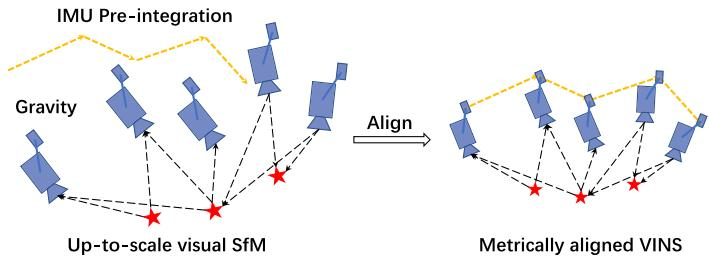
Fig. 3. Illustration of the visual-inertial alignment process for estimator initialization. The basic idea is to match the up-to-scale visual structure with IMU preintegration.
where s is the unknown scaling parameter, which will be solved in the next.
B. Visual-Inertial Alignment
An illustration of the visual-inertial alignment is shown in Fig. 3. The basic idea is to match the up-to-scale visual structure with IMU pre-integration.
1) Gyroscope Bias Calibration: Consider two consecutive frames and in the window, we get the rotation and from the visual SfM, as well as the relative constraint from IMU preintegration. We linearize the IMU preintegration term with respect to gyroscope bias and minimize the following cost function:
where indexes all frames in the window. In such way, we get an initial calibration of the gyroscope bias . Then, we repropagate all IMU preintegration terms , and using the new gyroscope bias.
2) Velocity, Gravity Vector, and Metric Scale Initialization: After the gyroscope bias is initialized, we move on to initialize other essential states for navigation, namely, velocity, gravity
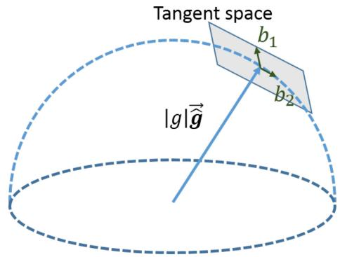
Fig. 4. Illustration of 2-DOF perturbation of gravity. Since the magnitude of gravity is known, g lies on a sphere with radius g ≈ 9.81 m/s2 . The gravity is perturbed around current estimate as $g ( \hat { \bar { \mathbf { g } } } + \delta \mathbf { g } ) , \delta \mathbf { g } = w _ { 1 } \mathbf { b } _ { 1 } + w _ { 2 } \mathbf { b } _ { 2 }\mathbf { b } _ { 1 }\mathbf { b } _ { 2 }$ are two orthogonal basis spanning the tangent space.
vector, and metric scale
where is velocity in the body frame while taking the kth image, is the gravity vector in the frame, and s scales the monocular SfM to metric units.
Consider two consecutive frames and in the window, we have following equations:
We can combine (6) and (9) into the following linear measurement model:
where
(10)
It can be seen that $\mathbf { R } _ { b _ { k } } ^ { c _ { 0 } } , \mathbf { R } _ { b _ { k + 1 } } ^ { c _ { 0 } } , \bar { \mathbf { p } } _ { c _ { k } } ^ { c _ { 0 } }\bar { \mathbf { p } } _ { c _ { k + 1 } } ^ { c _ { 0 } }\Delta t _ { k }$ is the time interval between two consecutive frames. By solving this linear least-square problem
we can get body frame velocities for every frame in the window, the gravity vector in the visual reference frame , as well as the scale parameter.
3) Gravity Refinement: The gravity vector obtained from the previous linear initialization step can be refined by constraining the magnitude. In most cases, the magnitude of the gravity vector is known. This results in only 2-DOF remaining for the gravity vector. Therefore, we perturb the gravity with two variables on its tangent space, which preserves 2-DOF. Our gravity vector is perturbed by $g ( \bar { \hat { \mathbf { g } } } + \delta \mathbf { g } ) , \delta \mathbf { g } = w _ { 1 } \mathbf { b } _ { 1 } + w _ { 2 } \mathbf { b } _ { 2 }\hat { \bar { \bf g } }\mathbf { b } _ { 1 }\mathbf { b } _ { 2 }{ \bf b } _ { 1 }\mathbf { b } _ { 1 }\mathbf { b } _ { 2 }\mathbf { g }g ( \hat { \bar { \bf g } } + \delta { \bf g } )2 \AA\hat { \bf g }$ converges.
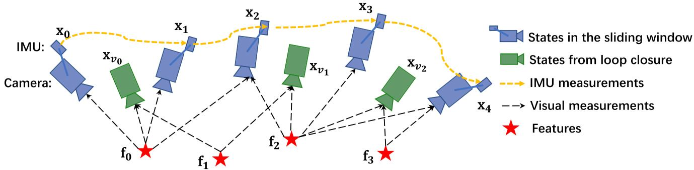
Fig. 5. Illustration of the sliding window monocular VIO with relocalization. Several camera poses, IMU measurements, and visual measurements exist in the sliding window. It is a tightly coupled formulation with IMU, visual, and loop measurements.
4) Completing Initialization: After refining the gravity vector, we can get the rotation between the world frame and the camera frame by rotating the gravity to the z-axis. We then rotate all variables from the reference frame to the world frame . The body frame velocities will also be rotated to the world frame. Translational components from the visual SfM will be scaled to metric units. At this point, the initialization procedure is completed and all these metric values will be fed to a tightly coupled monocular VIO.
VI. TIGHTLY COUPLED MONOCULAR VIO
After estimator initialization, we proceed with a sliding window-based tightly coupled monocular VIO for highaccuracy and robust state estimation. An illustration of the sliding window formulation is shown in Fig. 5.
A. Formulation
The full state vector in the sliding window is defined as
where is the IMU state at the time that the kth image is captured. It contains position, velocity, and orientation of the IMU in the world frame, and acceleration bias and gyroscope bias in the IMU body frame. n is the total number of keyframes, and m is the total number of features in the sliding window. is the inverse distance of the lth feature from its first observation.
We use a visual-inertial bundle adjustment formulation. We minimize the sum of prior and the Mahalanobis norm of all measurement residuals to obtain a maximum posteriori estimation as
where the Huber norm [37] is defined as
where and are residuals for IMU and visual measurements, respectively. The detailed definition of the residual terms will be presented in Sections VI-B and VI-C. B is the set of all IMU measurements, C is the set of features that have been observed at least twice in the current sliding window. is the prior information from marginalization. The Ceres solver [38] is used for solving this nonlinear problem.
B. IMU Measurement Residual
Consider the IMU measurements within two consecutive frames and in the sliding window, the residual for preintegrated IMU measurement can be defined as
\begin{array} { r l } & { [ \begin{array} { c } { \Delta \sigma _ { b _ { i + 1 } ^ { k } } ^ { k } } \\ { \delta \beta _ { b _ { i + 1 } ^ { k } } ^ { k } } \\ { \vdots } \\ { \delta \tilde { \theta } _ { b _ { i - 1 } ^ { k } } ^ { k } } \\ { \delta \tilde { \theta } _ { p } ^ { k } } \end{array} ] } \\ & = [ \begin{array} { c } { \mathbf { b } _ { i } ^ { k } \tilde { \varepsilon } ( \mathbf { P } _ { k _ { i + 1 } ^ { k } } ^ { k } - \mathbf { p } _ { i } ^ { n } ) } \\ { \mathbf { R } _ { \varepsilon ^ { \prime } } ^ { k } ( \mathbf { P } _ { k _ { i - 1 } ^ { k } } ^ { k } + \mathbf { \frac { 1 } { 2 } } \mathbf { \tilde { \theta } } ^ { m } \Delta \tilde { t } _ { k } ^ { \prime } - \mathbf { V } _ { k _ { i } ^ { \prime } } ^ { n } \Delta \mathbf { { { k } } } ) - \tilde { \theta } _ { b _ { i + 1 } ^ { k } } ^ { k } } \\ { \mathbf { R } _ { \varepsilon ^ { \prime } } ^ { k } ( \mathbf { V } _ { k _ { i - 1 } ^ { k } } ^ { k } + \mathbf { \frac { 1 } { 2 } } \mathbf { \tilde { \theta } } ^ { m } \Delta \tilde { t } _ { k } - \mathbf { V } _ { k _ { i } ^ { \prime } } ^ { n } ) - \tilde { \theta } _ { b _ { i + 1 } ^ { k } } ^ { k } } \\ { \mathbf { R } _ { \varepsilon ^ { \prime } } ^ { k } ( \mathbf { P } _ { k _ { i - 1 } ^ { k } } ^ { k } \cdot \mathbf { \tilde { \varepsilon } } \mathbf { Q } _ { k } ^ { m } + \mathbf { \frac { 1 } { 2 } } \mathbf { \tilde { \theta } } ^ { m } \Delta \tilde { t } _ { k } ^ { \prime } - \mathbf { V } _ { k _ { i } ^ { \prime } } ^ { n } ) } \\ \mathbf { B } _ { \varepsilon \tilde { \varepsilon } _ { i + 1 } ^ { k } } ^ \end{array} \end{array}\tag{16}
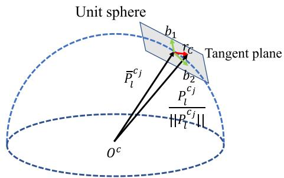
Fig. 6. Illustration of the visual residual on a unit sphere. is the unit vector for the observation of the lth feature in the frame. is predicted feature measurement on the unit sphere by transforming its first observation in the ith frame to the jth frame. The residual is defined on the tangent plane of
where extracts the vector part of a quaternion for the error-state representation. is the 3-D error-state representation of quaternion. $[ \hat { \alpha } _ { b _ { k + 1 } } ^ { b _ { k } } , \hat { \beta } _ { b _ { k + 1 } } ^ { b _ { k } } , \hat { \gamma } _ { b _ { k + 1 } } ^ { b _ { k } } ]$ are preintegrated IMU measurement terms between two consecutive image frames. Accelerometer and gyroscope biases are also included in the residual terms for the online correction.
C. Visual Measurement Residual
In contrast to the traditional pinhole camera models that define reprojection errors on a generalized image plane, we define the camera measurement residual on a unit sphere. The optics for almost all types of cameras, including wide-angle, fisheye, or omnidirectional cameras, can be modeled as a unit ray connecting the surface of a unit sphere. Consider the lth feature that is first observed in the ith image, the residual for the feature observation in the jth image is defined as
\begin{array} { r l } & { \mathbf { r } _ { c } ( \hat { \mathbf { z } } _ { i } ^ { c _ { i } } , \mathcal { X } ) = \left[ \mathbf { b } _ { 1 } \ \mathbf { b } _ { 2 } \right] ^ { T } \cdot \left( \hat { \mathcal { P } } _ { i } ^ { c _ { i } } - \frac { \mathcal { P } _ { i } ^ { c _ { i } } } { \| \mathcal { P } _ { i } ^ { c _ { i } } \| } \right) } \\ & { \hat { \mathcal { P } } _ { i } ^ { c _ { i } } = \pi _ { c } ^ { - 1 } \left( \left[ \hat { u } _ { i } ^ { c _ { j } } \right] \right) } \\ & { \mathcal { P } _ { i } ^ { c _ { i } } = \mathbf { R } _ { i } ^ { c } \left( \mathbf { R } _ { i \nu } ^ { b _ { i } } \left( \mathbf { R } _ { i _ { i } } ^ { b _ { i } } \left( \mathbf { R } _ { c \hat { \lambda } _ { i } } ^ { b } \frac { 1 } { n _ { i } } \pi _ { c } ^ { c - 1 } \left( \left[ \hat { u } _ { i } ^ { c _ { i } } \right] \right) \right. \right. \right. \right. } \\ & { \left. \left. \left. \left. + \mathbf { p } _ { c } ^ { b _ { i } } \right) + \mathbf { p } _ { b _ { i } } ^ { v _ { i } } - \mathbf { p } _ { b _ { j } } ^ { w } \right) - \mathbf { p } _ { c } ^ { b _ { i } } \right) } \end{array}\tag{17}
where is the first observation of the lth feature that happens in the ith image. is the observation of the same feature in the jth image. is the back projection function, which turns a pixel location into a unit vector using camera intrinsic parameters. Since the degrees-of-freedom of the vision residual is two, we project the residual vector onto the tangent plane. and are two arbitrarily selected orthogonal bases that span the tangent plane of , as shown in Fig. 6. The variance , as used in (14), is also propagated from the pixel coordinate onto the unit sphere.
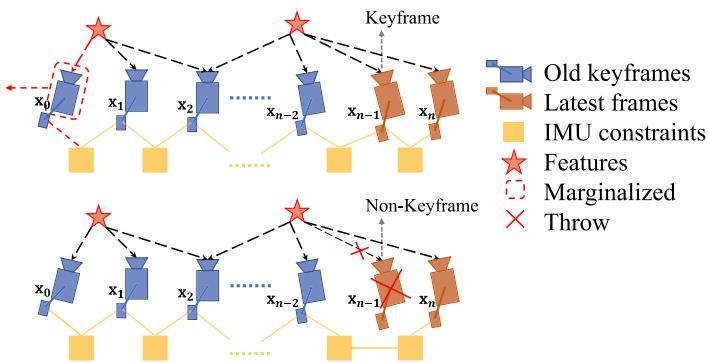
Fig. 7. Illustration of our marginalization strategy. If the second latest frame is a keyframe, we will keep it in the window, and marginalize the oldest frame and its corresponding visual and inertial measurements. Marginalized measurements are turned into a prior. If the second latest frame is not a keyframe, we will simply remove the frame and all its corresponding visual measurements. However, preintegrated inertial measurements are kept for nonkeyframes, and the preintegration process is continued toward the next frame.
D. Marginalization
In order to bound the computational complexity of our optimization-based VIO, marginalization is incorporated. We selectively marginalize out IMU states and features from the sliding window, meanwhile convert measurements corresponding to marginalized states into a prior.
As shown in Fig. 7, when the second latest frame is a keyframe, it will stay in the window, and the oldest frame is marginalized out with its corresponding measurements. Otherwise, if the second latest frame is a nonkeyframe, we throw visual measurements and keep IMU measurements that connect to this nonkeyframe. We do not marginalize out all measurements for nonkeyframes in order to maintain sparsity of the system. Our marginalization scheme aims to keep spatially separated keyframes in the window. This ensures sufficient parallax for feature triangulation, and maximize the probability of maintaining accelerometer measurements with large excitation.
The marginalization is carried out using the Schur complement [39]. We construct a new prior based on all marginalized measurements related to the removed state. The new prior is added onto the existing prior.
We note that marginalization results in the early fix of linearization points, which may result in suboptimal estimation results. However, since small drifting is acceptable for VIO, we argue that the negative impact caused by marginalization is not critical.
E. Motion-Only Visual-Inertial Optimization for Camera-Rate State Estimation
For devices with low computational power, such as mobile phones, the tightly coupled monocular VIO cannot achieve camera-rate outputs due to the heavy computation demands for the nonlinear optimization. To this end, beside the full optimization, we employ a lightweight motion-only visual-inertial optimization to boost the state estimation to camera rate (30 Hz).
The cost function for the motion-only visual-inertial optimization is the same as the one for monocular VIO in (14).
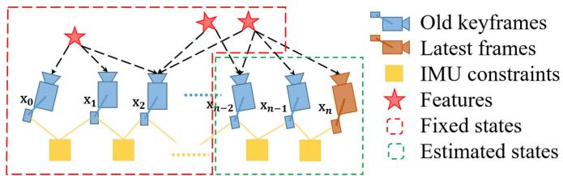
Fig. 8. Illustration of motion-only optimization for camera-rate outputs.
However, instead of optimizing all states in the sliding window, we only optimize the poses and velocities of a fixed number of latest IMU states. We treat feature depth, extrinsic parameters, bias, and old IMU states that we do not want to optimize as constant values. We do use all visual and inertial measurements for the motion-only optimization. This results in much smoother state estimates than the single-frame PnP methods. An illustration of the proposed strategy is shown in Fig. 8. In contrast to the full tightly coupled monocular VIO, which may cause more than 50 ms on state-of-the-art embedded computers, the motion-only visual-inertial optimization only takes about 5 ms to compute. This enables the low-latency camera-rate pose estimation that is particularly beneficial for drone and AR applications.
F. IMU Forward Propagation for IMU-Rate State Estimation
IMU measurements come at a much higher rate than visual measurements. Although the frequency of our VIO is limited by image capture frequency, we can still directly propagate the latest VIO estimate with the recent IMU measurements to achieve IMU-rate performance. The high-frequency state estimates can be utilized as state feedback for the closed-loop closure. An autonomous flight experiment utilizing this IMU-rate state estimates is presented in Section IX-C.
VII. RELOCALIZATION
Our sliding window and marginalization scheme bound the computation complexity, but it also introduces accumulated drifts for the system. To eliminate drifts, a tightly coupled relocalization module that seamlessly integrates with the monocular VIO is proposed. The relocalization process starts with a loopdetection module that identifies places that have already been visited. Feature-level connections between loop closure candidates and the current frame are then established. These feature correspondences are tightly integrated into the monocular VIO module, resulting in drift-free state estimates with minimum computation. Multiple observations of multiple features are directly used for relocalization, resulting in higher accuracy and better state estimation smoothness. A graphical illustration of the relocalization procedure is shown in Fig. 9(a).
A. Loop Detection
We utilize DBoW2 [29], a state-of-the-art bag-of-words place recognition approach, for loop detection. In addition to the corner features that are used for the monocular VIO, 500 more corners are detected and described by the BRIEF descriptor [40].
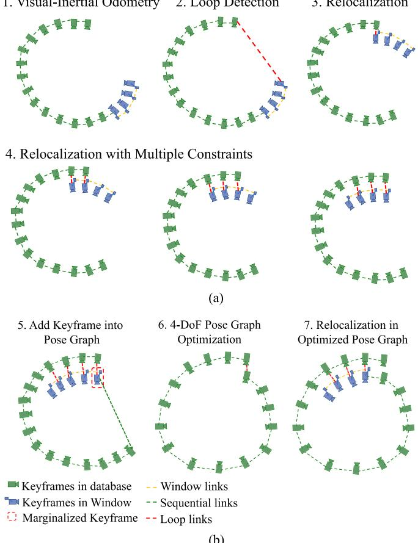
(b)
Fig. 9. Diagram illustrating the relocalization and pose graph optimization procedure. (a) The relocalization procedure. It starts with VIO-only pose estimates (blue). Past states are recorded (green). If a loop is detected for the newest keyframe (see Section VII-A), as shown by the red line in the second plot, a relocalization occurred. Note that due to the use of feature-level correspondences for relocalization, we are able to incorporate loop-closure constraints from multiple past keyframes (see Section VII-C), as indicated in the last three plots. (b) The global pose graph optimization. A keyframe is added into the pose graph when it is marginalized out from the sliding window. If there is a loop between this keyframe and any other past keyframes, the loop-closure constraints, formulated as 4-DOF relative rigid body transforms, will also be added to the pose graph. The pose graph is optimized using all relative pose constraints (see Section VIII-C) in a separate thread, and the relocalization module always runs with respect to the newest pose graph configuration.
The additional corner features are used to achieve better recall rate on loop detection. Descriptors are treated as the visual word to query the visual database. DBoW2 returns loop-closure candidates after temporal and geometrical consistency check. We keep all BRIEF descriptors for feature retrieving, but discard the raw image to reduce the memory consumption.
B. Feature Retrieval
When a loop is detected, the connection between the local sliding window and the loop-closure candidate is established by retrieving feature correspondences. Correspondences are found by the BRIEF descriptor matching. Descriptor matching may cause some wrong matching pairs. To this end, we use two-step geometric outlier rejection, as shown in Fig. 10.
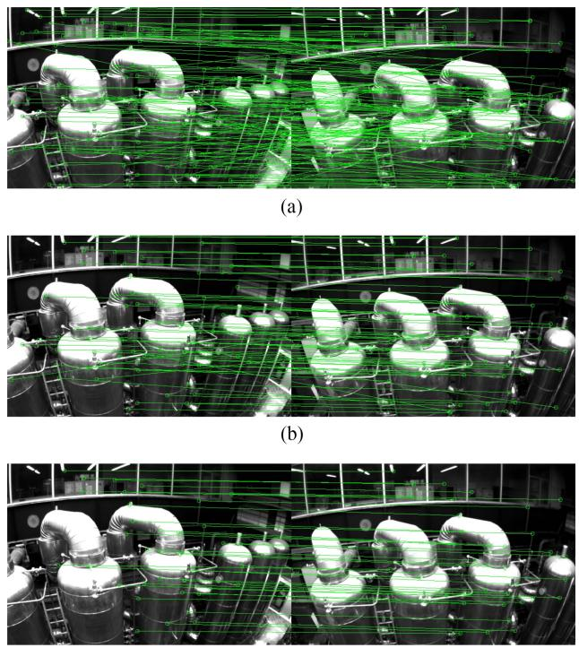
(c)
Fig. 10. Descriptor matching and outlier removal for feature retrieval during the loop closure. (a) BRIEF descriptor matching results. (b) First step: 2-D–2-D outlier rejection results. (c) Second step: 3-D–2-D outlier rejection results.
1) 2-D–2-D: A fundamental matrix test with RANSAC [33]. We use 2-D observations of retrieved features in the current image and loop-closure candidate image to perform the fundamental matrix test.
2) 3-D–2-D: The PnP test with RANSAC [35]. Based on the known 3-D position of features in the local sliding window, and 2-D observations in the loop closure candidate image, we perform the PnP test.
After outlier rejection, we treat this candidate as a correct loop detection and perform relocalization.
C. Tightly Coupled Relocalization
The relocalization process effectively aligns the current sliding window to past poses. During relocalization, we treat poses of all loop-closure frames as constants. We jointly optimize the sliding window using all IMU measurements, local visual measurement measurements, and retrieved feature correspondences. We can easily write the visual measurement model for retrieved features observed by a loop-closure frame v to be the same as those for visual measurements in VIO, as (17). The only difference is that the pose of the loop-closure frame, which is taken from the pose graph (see Section VIII), or directly from the past odometry output (if this is the first relocalization), is treated as a constant. To this end, we can slightly modify the nonlinear cost function in (14) with additional loop
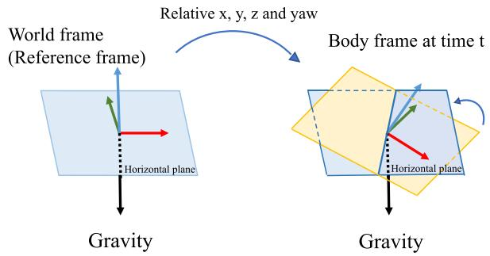
Fig. 11. Illustration of four drifted direction. With the movement of the object, the x, y, z, and yaw angles change relatively with respect to the reference frame. The absolute roll and pitch angles can be determined by the horizontal plane from the gravity vector.
terms as
where L is the set of the observation of retrieved features in the loop-closure frames. (l, v) means lth feature observed in the loop-closure frame v. Note that although the cost function is slightly different from (14), the dimension of the states to be solved remains the same, as poses of loop-closure frames are considered as constants. When multiple loop closures are established with the current sliding window, we optimize using all loop-closure feature correspondences from all frames at the same time. This gives multiview constraints for relocalization, resulting in higher accuracy and better smoothness. The global optimization to maintain consistency after relocalization will be discussed in Section VIII.
VIII. GLOBAL POSE GRAPH OPTIMIZATION AND MAP REUSE
After relocalization, additional pose graph optimization step is developed to ensure the set of past poses are registered into a globally consistent configuration.
A. Four Accumulated Drift Direction
Benefiting from the inertial measurement of the gravity, the roll and pitch angles are fully observable in the VINS. As depicted in Fig. 11, with the movement of the object, the 3-D position and rotation change relatively with respect to the reference frame. However, we can determinate the horizontal plane by the gravity vectors, that means we observe the absolute roll and pitch angles all the time. Therefore, the roll and pitch are absolute states in the world frame, while the x, y, z, and yaw are relative estimates with respect to the reference frame. The accumulated drift only occurs in , and yaw angles. To take full advantage of valid information and correct drift efficiently, we fix the drift-free roll and pitch, and only perform pose graph optimization in 4-DOF.
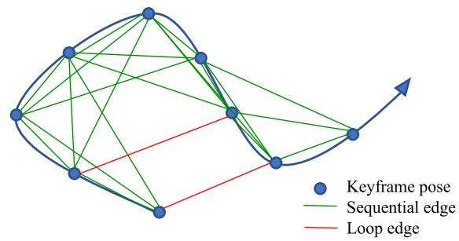
Fig. 12. Illustration of the pose graph. The keyframe serves as a vertex in the pose graph and it connects other vertexes by sequential edges and loop edges. Every edge represents relative translation and relative yaw.
B. Adding Keyframes Into the Pose Graph
Keyframes are added into the pose graph after the VIO process. Every keyframe serves as a vertex in the pose graph, and it connects with other vertexes by two types of edges, as shown in Fig. 12.
1) Sequential Edge: A keyframe establishes several sequential edges to its previous keyframes. A sequential edge represents the relative transformation between two keyframes, which is taken directly from VIO. Considering keyframe i and one of its previous keyframes the sequential edge only contains relative position and yaw angle
2) Loop-Closure Edge: If the keyframe has a loop connection, it connects the loop-closure frame by a loop-closure edge in the pose graph. Similarly, the loop-closure edge only contains a 4-DOF relative pose transform that is defined the same as (19). The value of the loop-closure edge is obtained using results from relocalization.
C. 4-DOF Pose Graph Optimization
We define the residual of the edge between frames i and minimally as
where and are the fixed estimates of roll and pitch angles, which are obtained from monocular VIO.
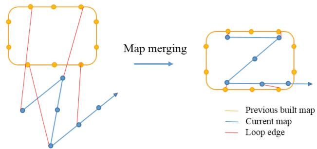
Fig. 13. Illustration of map merging. The yellow figure is the previous-built map. The blue figure is the current map. Two maps are merged according to the loop connections.
The whole graph of sequential edges and loop closure edges are optimized by minimizing the following cost function:
where is the set of all sequential edges and is the set of all loop-closure edges. Although the tightly coupled relocalization already helps with eliminating wrong loop closures, we add another Huber norm to further reduce the impact of any possible wrong loops. In contrast, we do not use any robust norms for sequential edges, as these edges are extracted from VIO, which already contain sufficient outlier rejection mechanisms.
The pose graph optimization and relocalization (see Section VII-C) run asynchronously in two separate threads. This enables immediate use of the most optimized pose graph for relocalization whenever it becomes available. Similarly, even if the current pose graph optimization is not completed yet, relocalization can still take place using the existing pose graph configuration. This process is illustrated in Fig. 9(b).
D. Pose Graph Merging
The pose graph can not only optimize the current map, but also merge the current map with a previous-built map. If we have loaded a previous-built map and detected loop connections between two map, we can merge them together. Since all edges are relative constraints, the pose graph optimization automatically merges two maps together by the loop connections. As shown in Fig. 13, the current map is pulled into the previous map by loop edges. Every vertex and every edge are relative variables, therefore, we only need to fix the first vertex in the pose graph.
E. Pose Graph Saving
The structure of our pose graph is very simple. We only need to save vertexes and edges, as well as descriptors of every keyframe (vertex). Raw images are discarded to reduce the memory consumption. To be specific, the states we save for ith keyframe are
where i is the frame index, and and are position and orientation, respectively, from VIO. If this frame has a loopclosure frame, v is the loop-closure frame’s index. and are the relative position and yaw angle between these two frames, which is obtained from relocalization. is the feature set. Each feature contains 2-D location and its BRIEF descriptor.
F. Pose Graph Loading
We use the same saving format to load keyframe. Every keyframe is a vertex in the pose graph. The initial pose of the vertex is and . The loop edge is established directly by the loop information . Every keyframe establishes several sequential edges with its neighbor keyframes, as (19). After loading the pose graph, we perform global 4-DOF pose graph once immediately. The speed of the pose graph saving and loading is in the linear correlation with pose graph’s size.
IX. EXPERIMENTAL RESULTS
We perform dataset and real-world experiments and two applications to evaluate the proposed VINS-Mono system. In the first experiment, we compare the proposed algorithm with another state-of-the-art algorithm on public datasets. We perform a numerical analysis to show the accuracy of our system in details. We then test our system in the indoor environment to evaluate the performance in repetitive scenes. A large-scale experiment is carried out to illustrate the long-time practicability. Additionally, we apply the proposed system for two applications. For aerial robot application, we use VINS-Mono for the position feedback to control a drone to follow a predefined trajectory. We then port our approach onto an iOS mobile device.
A. Dataset Comparison
1) VIO Comparison: We evaluate our proposed VINS-Mono using the EuRoC MAV visual-inertial datasets [41]. The datasets are collected onboard a micro-aerial vehicle (MAV), which contains stereo images (Aptina MT9V034 global shutter, WVGA monochrome, 20 FPS), synchronized IMU measurements (ADIS16448, 200 Hz), and ground-truth states (VICON and Leica MS50). We only use images from the left camera.
In this experiment, we compare VINS-Mono with OKVIS [15], a state-of-the-art VIO that works with monocular and stereo cameras. OKVIS is an another optimizationbased sliding-window algorithm. Our algorithm is different with OKVIS in many details, as presented in the technical sections. Our system is complete with robust initialization and loop closure. We show results of two sequences, MH_03_medium and MH_05_difficult, in detail. To simplify the notation, we use VINS to denote our approach with only monocular VIO, and VINS_loop to denote the complete version with relocalization and pose graph optimization. We use OKVIS to denote the OKVIS’s results using the monocular camera.
For the sequence MH_03_medium, the trajectory is shown in Fig. 14(a). The relative pose errors evaluated by [42] are shown in Fig. 15. In the error plot, VINS-Mono with a loop closure outperforms others in the long range. The translation and yaw drifts are efficiently reduced by the loop-closure model. The results are same in MH_05_difficult, as shown in Figs. 14(b) and 16.
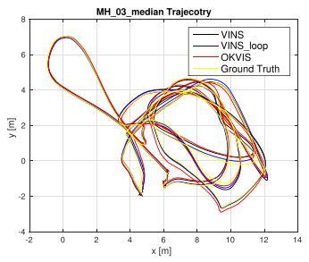
(a)
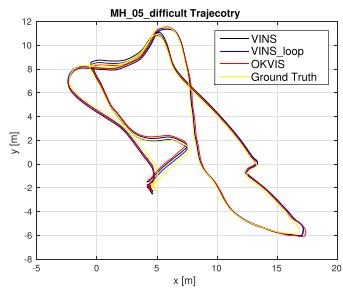
(b)
Fig. 14. (a) Trajectory in MH_03_medium, compared with OKVIS. (b) Trajectory in MH_05_difficult, compared with OKVIS. (a) MH_03_trajectory. (b) MH_05_trajectory.
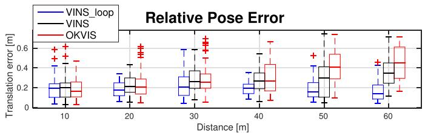
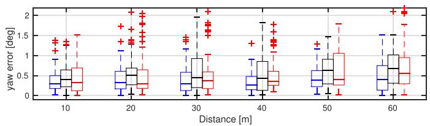
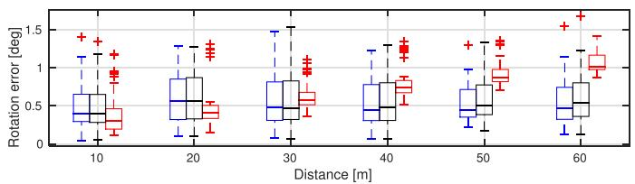
Fig. 15. Relative pose error [42] in MH_03_medium. Three plots are relative errors in translation, yaw, and rotation, respectively.
The root-mean-square error (RMSE) of all sequences in Eu-RoC datasets is shown in Table I, which is evaluated by an absolute trajectory error (ATE) [43]. VINS-Mono with loop closure outperforms others in most cases. In some cases with a short travel distance and little drift, such as V1_03_difficult and V2_01_easy, loop closure module does not have significant effects.
More benchmark comparisons can be found in [44], which shows a favorable performance of the proposed system comparing against other state-of-the-art algorithms.
2) Map Merge Result: Five MH sequences are collected at different start positions and different times in the same place, so we can merge five MH sequences into one global pose graph. We do relocalization and pose graph optimization based on similar camera views in every sequence. We only fix the first frame in the first sequence, whose the position and yaw angle are set to zero. Then, we merge new sequences into previous map one by one. The trajectory is shown in Fig. 17. We also compare the whole trajectory with ground truth. The RMSE of ATE [43] is
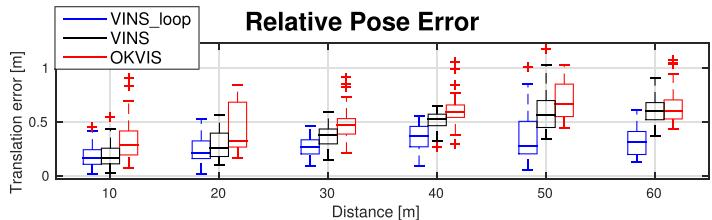
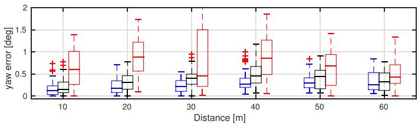
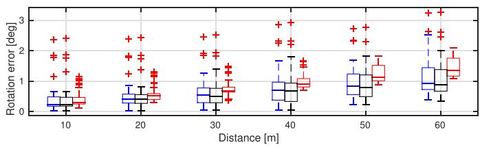
Fig. 16. Relative pose error [42] in MH_05_difficult. Three plots are relative errors in translation, yaw, and rotation, respectively.
TABLE I
RMSE [43] IN EUROC DATASETS IN METERS
| Sequence | OKVIS | VINS | VINS_loop |
| MH_01_easy | 0.33 | 0.15 | 0.12 |
| MH_02_easy | 0.37 | 0.15 | 0.12 |
| MH_03_medium | 0.25 | 0.22 | 0.13 |
| MH_04_difficult | 0.27 | 0.32 | 0.18 |
| MH_05_difficult | 0.39 | 0.30 | 0.21 |
| V1_01_easy | 0.094 | 0.079 | 0.068 |
| V1_02_medium | 0.14 | 0.11 | 0.084 |
| V1_03_difficult | 0.21 | 0.18 | 0.19 |
| V2_01_easy | 0.090 | 0.080 | 0.081 |
| V2_02_medium | 0.17 | 0.16 | 0.16 |
| V2_03_difficult | 0.23 | 0.27 | 0.22 |
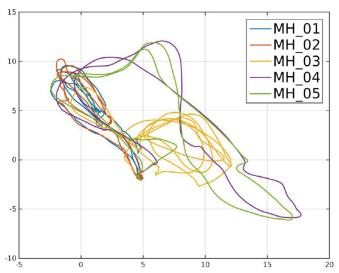
(a)
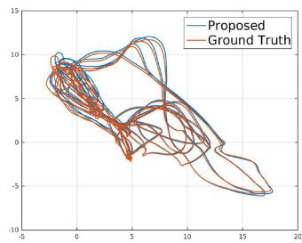
(b)
Fig. 17. (a) Merged trajectory of all MH sequences. (b) Merged trajectory of the proposed system compared against ground truth.
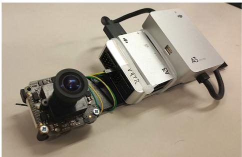
Fig. 18. Device used for the indoor experiment. It contains one forwardlooking global shutter camera (MatrixVision mvBlueFOX-MLC200w) wit h 752 × 480 resolution. We use the built-in IMU (ADXL278 and ADXRS290, 100 Hz) for the DJI A3 flight controller.
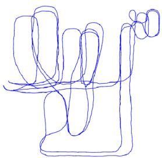
(a)
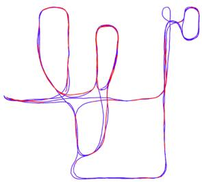
(b)
Fig. 19. Results of the indoor experiment with comparison against OKVIS. (a) Trajectory of OKVIS. (b) Trajectory of the proposed system. Red lines indicate loop detection.
TABLE II TIMING STATISTICS
| Tread | Modules | Time (ms) | Rate (Hz) |
| 1 | Feature detector | 15 | 25 |
| KLT tracker | 5 | 25 | |
| 2 | Window optimization | 50 | 10 |
| 3 | Loop detection | 100 | |
| Pose graph optimization | 130 |
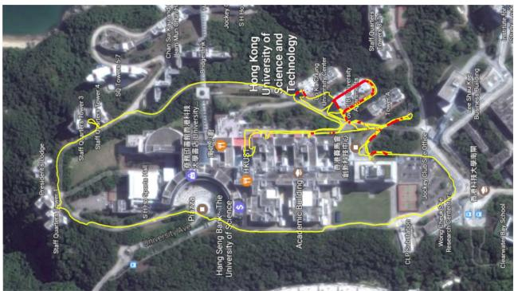
Fig. 20. Estimated trajectory of the very large-scale environment aligned with Google map. The yellow line is the estimated trajectory from VINS-Mono. Red lines indicates loop closure.
0.21 m, which is an impressive result in a 500-m-long run in total. This experiment shows that the map “evolves” over time by incrementally merging new sensor data captured at different times and the consistency of the whole pose graph is preserved.
(b)
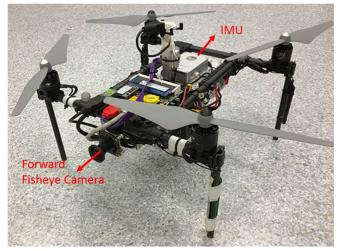
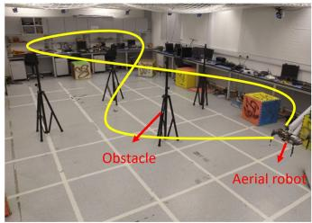
Fig. 21. (a) Self-developed aerial robot with a forward-looking fisheye camera (MatrixVision mvBlueFOX-MLC200w, 190 FOV) and an DJI A3 flight controller (ADXL278 and ADXRS290, 100 Hz). (b) Designed trajectory. Four known obstacles are placed. The yellow line is the predefined figure eight-figure pattern, which the aerial robot should follow. The robot follows the trajectory four times with loop closure disabled.
B. Real-World Experiments
1) Indoor Experiment: The sensor suite we use is shown in Fig. 18. It contains a monocular camera (mvBlueFOX-MLC200w, 20 Hz) and an IMU (100 Hz) inside the DJI A3 controller.1 We hold the sensor suite by hand and walk at a normal pace. We compare our result with OKVIS, as shown in Fig. 19. Fig. 19(a) is the VIO output from OKVIS. Fig. 19(b) is the result of the proposed method with relocalization and loop closure. Noticeable VIO drifts occurred when we circle indoor. OKVIS accumulate significant drifts in x, y, z, and yaw angles. Our relocalization and loop-closure modules efficiently eliminate these drifts.
2) Large-Scale Environment: This very large-scale dataset that goes around the whole HKUST campus was recorded with a handheld VI-Sensor.2 The dataset covers the place that is around 710 m in length, 240 m in width, and with 60 m in height changes. The total path length is 5.62 km. The data contain the 25-Hz image and 200-Hz IMU lasting for 1 h and 34 min. It is a very significant experiment to test the stability and durability of VINS-Mono.
In this large-scale test, we set the keyframe database size to 2000 in order to provide sufficient loop information and achieve real-time performance. We run this dataset with an Intel i7-4790 CPU running at 3.60 GHz. Timing statistics are show in Table II. The estimated trajectory is aligned with Google map in Fig. 20. Compared with Google map, we can see our results are almost drift free in this very long-duration test.
C. Applications
1) Feedback Control on an Aerial Robot: We apply VINS-Mono for autonomous feedback control of an aerial robot, as shown in Fig. 21. We use a forward-looking global shutter camera (MatrixVision mvBlueFOX-MLC200w) with 752 × 480 resolution, and equipped it with a 190º fisheye lens. A DJI A3 flight controller is used for both IMU measurements and for attitude stabilization control. The onboard computation resource is an Intel i7-5500U CPU running at 3.00 GHz. The traditional pinhole camera model is not suitable for the large FOV camera. We use MEI [45] model for this camera, calibrated by the toolkit [46].
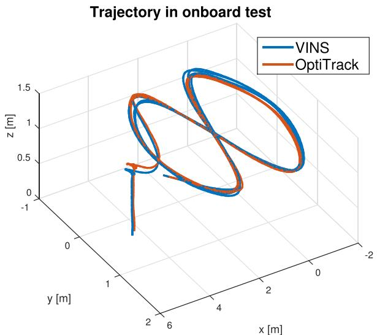
Fig. 22. Trajectory of loop-closure-disabled VINS-Mono on the MAV platform and its comparison against the ground truth. The robot follows the trajectory four times. VINS-Mono estimates are used as the real-time position feedback for the controller. Ground truth is obtained using OptiTrack. Total length is 61.97 m. Final drift is 0.18 m.
In this experiment, we test the performance of autonomous trajectory tracking under state estimates from VINS-Mono. The loop closure is disabled for this experiment. The quadrotor is commanded to track a figure-eight pattern with each circle being 1.0 m in radius, as shown in Fig. 22. Four obstacles are put around the trajectory to verify the accuracy of VINS-Mono without the loop closure. The quadrotor follows this trajectory four times continuously during the experiment. The 100-Hz onboard state estimates (see Section VI-F) enables real-time feedback control of the quadrotor.
Ground truth is obtained using OptiTrack.3 Total trajectory length is 61.97 m. The final drift is [0.08, 0.09, 0.13] m, resulting in 0.29% position drift. Details of the translation and rotation as well as their corresponding errors are shown in Fig. 23.
2) Mobile Device: We port VINS-Mono to mobile devices and present a simple AR application to showcase its accuracy and robustness. We name our mobile implementation VINS-Mobile.4 VINS-Mobile runs on iPhone devices. we use 30-Hz images with 640 × 480 resolution captured by the iPhone, and IMU data at 100 Hz obtained by the built-in InvenSense MP67B six-axis gyroscope and accelerometer. First, we insert a virtual cube on the plane, which is extracted from estimated visual features as shown in Fig. 24(a). Then, we hold the device and walk inside and outside the room at a normal pace. When loops are detected, we use the 4-DOF pose graph optimization (see Section VIII-C) to eliminate x, y, z, and yaw drifts. After traveling about 264 m, we return to the start location. The final result can be seen in Fig. 24(b), VINS returns to the start point. The drift in total trajectory is eliminated due to the 4-DOF pose graph optimization. This is also evidenced by the fact that the cube is registered to the same place on the image comparing to the beginning.
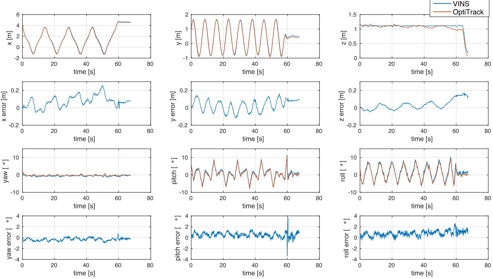
Fig. 23. Position, orientation, and their corresponding errors of loop-closure-disabled VINS-Mono compared with OptiTrack.
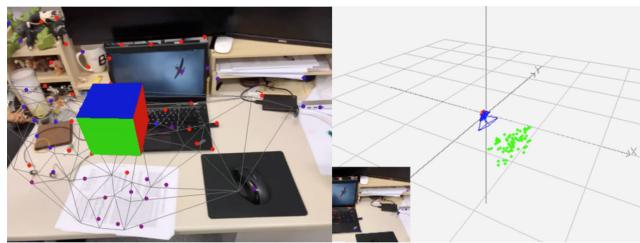
(a)
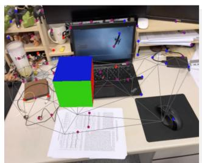
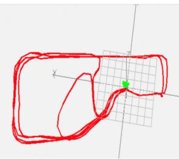
(b)
Fig. 24. Left pictures are AR images from VINS-Mobile, while the right pictures are estimated trajectory. (a) Beginning: VINS-Mobile is initialized at the start location and a virtual box is inserted on the plane, which is extracted from estimated features. (b) End: final trajectory of VINS-Mobile. The total length is about 264 m.
X. CONCLUSION AND FUTURE WORK
In this paper, we propose a robust and versatile monocular visual-inertial estimator. Our approach features both state-ofthe-art and novel solutions to IMU preintegration, estimator initialization, online extrinsic calibration, tightly coupled VIO, relocalization, and efficient global optimization. We show superior performance by comparing against other state-of-the-art open-source implementations. We open source both PC and iOS implementation for the benefit of the community.
Although feature-based VINS estimators have already reached the maturity of real-world deployment, we still see many directions for future research. Monocular VINS may reach weakly observable or even degenerate conditions depending on the motion and the environment. We are interested in online methods to evaluate the observability properties of monocular VINS, and online generation of motion plans to restore observability. Another research direction concerns the mass deployment of monocular VINS on a large variety of consumer devices, such as Android phones. This application requires online calibration of almost all sensor intrinsic and extrinsic parameters, as well as the online identification of calibration qualities. Finally, we are interested in producing dense maps given results from monocular VINS. Our first results on monocular visualinertial dense mapping with application to drone navigation was presented in [47]. However, extensive research is still necessary to further improve the system accuracy and robustness.
APPENDIX A QUATERNION-BASED IMU PREINTEGRATION
Given two time instants that correspond to image frames and , position, velocity, and orientation states can be propagated by inertial measurements during time interval in the world frame as follows:
where
is the duration between the time interval
It can be seen that the IMU state propagation requires rotation, position, and velocity of the frame . When these starting states change, we need to repropagate IMU measurements. Especially, in the optimization-based algorithm, every time we adjust poses, we will need to repropagate IMU measurements between them. This propagation strategy is computationally demanding. To avoid repropagation, we adopt the preintegration algorithm.
After changing the reference frame from the world frame to the local frame , we can only preintegrate the parts that are related to linear acceleration aˆ and angular velocity as follows:
where
It can be seen that the preintegration terms (26) can be obtained solely with IMU measurements by taking as the reference frame given bias. , and are only related to IMU biases instead of other states in and When the estimation of bias changes, if the change is small, we adjust , and by their first-order approximations with respect to the bias, otherwise we do repropagation. This strategy saves a significant amount of computational resources for optimization-based algorithms, since we do not need to propagate IMU measurements repeatedly.
For discrete-time implementation, different numerical integration methods such as zero-order hold (Euler), first-order hold (midpoint), and higher order (RK4) integration can be applied. If we use zero-order hold discretization, the result is numerically identical to [19] and [24]. Here, we take zero-order discretization as the example.
At the beginning, and are 0, and is identity quaternion. The mean of , and in (26) is propagated step by step as follows. Note that the additive noise terms and are zero mean. This results in estimated values of the preintegration terms, marked by as
where i is discrete moment corresponding to a IMU measurement within . δt is the time interval between two IMU measurements i and
Then, we deal with the covariance propagation. Since the four-dimensional rotation quaternion is overparameterized, we define its error term as a perturbation around its mean
where is 3-D small perturbation. We can derive continuoustime dynamics of error terms of (26) as follows:
[ \begin{array} { c } { \delta \dot { \alpha } _ { t } ^ { b _ { k } } } \\ { \delta \dot { \beta } _ { t } ^ { b _ { k } } } \\ { \dot { \theta } _ { t } ^ { b _ { k } } } \\ { \delta \dot { \theta } _ { t } ^ { b _ { k } } } \\ { \delta \dot { \mathbf { b } } _ { a _ { t } } } \\ { \delta \dot { \mathbf { b } } _ { w _ { t } } } \end{array} ] = [ \begin{array} { c c c c } { 0 \textbf { I } } & { 0 } & { 0 } & { 0 } \\ { 0 } & { - \mathbf { R } _ { t } ^ { b _ { k } } \hat { \mathbf { a } } _ { t } - \mathbf { b } _ { a _ { t } } _ { \times } } & { - \mathbf { R } _ { t } ^ { b _ { k } } } & { 0 } \\ { 0 } & { - \lfloor \hat { \omega } _ { t } - \mathbf { b } _ { w _ { t } } _ { \times } } & { 0 } & { - \mathbf { I } } \\ { 0 } & { 0 } & { 0 } & { 0 } \\ { 0 } & { 0 } & { 0 } & { 0 } & { 0 } \end{array} ] [ \begin{array} { c } { \delta \alpha _ { t } ^ { b _ { k } } } \\ { \delta \beta _ { t } ^ { b _ { k } } } \\ { \delta \theta _ { t } ^ { b _ { k } } } \\ { \delta \mathbf { b } _ { a _ { t } } } \\ { \delta \mathbf { b } _ { w _ { t } } } \end{array} ]
In zero-order hold discretization, is constant over the integration period, such that for a given time-step δt. By expanding the exponential series and omitting the higher order term, we get . With the continuous-time noise covariance matrix $\mathbf Q _ { t } = \mathrm { d i a g } ( \pmb { \sigma } _ { a } ^ { 2 } , \pmb { \sigma } _ { w } ^ { 2 } , \pmb { \sigma } _ { b _ { a } } ^ { 2 } , \pmb { \sigma } _ { b _ { w } } ^ { 2 } )$ , the discrete-time noise covariance matrix is computed as
The covariance propagates from the initial covariance as follows:
Meanwhile, the first-order Jacobian matrix can be also propagate recursively with the initial Jacobian as
Using this recursive formulation, we get the covariance matrix and the Jacobian . The first-order approximation of , and with respect to biases can be written as
where and is the subblock matrix in 1 whose location is corresponding to . The same meaning is also used for , and . When the estimation of bias changes slightly, we use (33) to correct preintegration results approximately instead of repropagation.
Now, we are able to write down the IMU measurement model with its corresponding covariance as
REFERENCES
[1] G. Klein and D. Murray, “Parallel tracking and mapping for small AR workspaces,” in Proc. IEEE ACM Int. Symp. Mixed Augmented Reality, 2007, pp. 225–234.
[2] C. Forster, M. Pizzoli, and D. Scaramuzza, “SVO: Fast semi-direct monocular visual odometry,” in Proc. IEEE Int. Conf. Robot.Autom., Hong Kong, May 2014, pp. 15–22.
[3] J. Engel, T. Schops, and D. Cremers, “LSD-SLAM: Large-scale direct ¨ monocular slam,” in Proc. Eur. Conf. Comput. Vis., 2014, pp. 834–849.
[4] R. Mur-Artal, J. Montiel, and J. D. Tardos, “ORB-SLAM: A versatile and accurate monocular SLAM system,” IEEE Trans. Robot., vol. 31, no. 5, pp. 1147–1163, Oct. 2015.
[5] J. Engel, V. Koltun, and D. Cremers, “Direct sparse odometry,” IEEE Trans. Pattern Anal. Mach. Intell., vol. 40, no. 3, pp. 611–625, Mar. 2018.
[6] T. Qin and S. Shen, “Robust initialization of monocular visual-inertial estimation on aerial robots,” in Proc. IEEE/RSJ Int. Conf. Intell. Robots Syst., Vancouver, Canada, 2017, pp. 4225–4232.
[7] P. Li, T. Qin, B. Hu, F. Zhu, and S. Shen, “Monocular visual-inertial state estimation for mobile augmented reality,” in Proc. IEEE Int. Symp. Mixed Augmented Reality, Nantes, France, 2017, pp. 11–21.
[8] T. Qin, P. Li, and S. Shen, “Relocalization, global optimization and map merging for monocular visual-inertial SLAM,” in Proc. IEEE Int. Conf. Robot. Autom., Brisbane, Australia, 2018.
[9] S. Weiss, M. W. Achtelik, S. Lynen, M. Chli, and R. Siegwart, “Real-time onboard visual-inertial state estimation and self-calibration of MAVs in unknown environments,” in Proc. IEEE Int. Conf. Robot. Autom., 2012, pp. 957–964.
[10] S. Lynen, M. W. Achtelik, S. Weiss, M. Chli, and R. Siegwart, “A robust and modular multi-sensor fusion approach applied to MAV navigation,” in Proc. IEEE/RSJ Int. Conf. Intell. Robots Syst., 2013, pp. 3923–3929.
[11] A. I. Mourikis and S. I. Roumeliotis, “A multi-state constraint Kalman filter for vision-aided inertial navigation,” in Proc. IEEE Int. Conf. Robot. Autom., Roma, Italy, Apr. 2007, pp. 3565–3572.
[12] M. Li and A. Mourikis, “High-precision, consistent EKF-based visualinertial odometry,” Int. J. Robot. Res., vol. 32, no. 6, pp. 690–711, May 2013.
[13] M. Bloesch, S. Omari, M. Hutter, and R. Siegwart, “Robust visual inertial odometry using a direct EKF-based approach,” in Proc. IEEE/RSJ Int. Conf. Intell. Robots Syst., 2015, pp. 298–304.
[14] M. Kaess, H. Johannsson, R. Roberts, V. Ila, J. J. Leonard, and F. Dellaert, “iSAM2: Incremental smoothing and mapping using the Bayes tree,” Int. J. Robot. Res., vol. 31, no. 2, pp. 216–235, 2012.
[15] S. Leutenegger, S. Lynen, M. Bosse, R. Siegwart, and P. Furgale, “Keyframe-based visual-inertial odometry using nonlinear optimization,” Int. J. Robot. Res., vol. 34, no. 3, pp. 314–334, Mar. 2014.
[16] S. Shen, N. Michael, and V. Kumar, “Tightly-coupled monocular visualinertial fusion for autonomous flight of rotorcraft MAVs,” in Proc. IEEE Int. Conf. Robot. Autom., Seattle, WA, May 2015, pp. 5303–5310.
[17] Z. Yang and S. Shen, “Monocular visual–inertial state estimation with online initialization and camera–IMU extrinsic calibration,” IEEE Trans. Autom. Sci. Eng., vol. 14, no. 1, pp. 39–51, Jan. 2017.
[18] R. Mur-Artal and J. D. Tardos, “Visual-inertial monocular slam with map ´ reuse,” IEEE Robot. Autom. Lett., vol. 2, no. 2, pp. 796–803, Apr. 2017.
[19] C. Forster, L. Carlone, F. Dellaert, and D. Scaramuzza, “On-manifold preintegration for real-time visual–inertial odometry,” IEEE Trans. Robot., vol. 33, no. 1, pp. 1–21, Feb. 2017.
[20] K. Wu, A. Ahmed, G. A. Georgiou, and S. I. Roumeliotis, “A square root inverse filter for efficient vision-aided inertial navigation on mobile devices,” in Proc. Robot., Sci. Syst., vol. 2, 2015.
[21] M. K. Paul, K. Wu, J. A. Hesch, E. D. Nerurkar, and S. I. Roumeliotis, “A comparative analysis of tightly-coupled monocular, binocular, and stereo VINS,” in Proc. IEEE Int. Conf. Robot. Autom., Singapore, May 2017, pp. 165–172.
[22] V. Usenko, J. Engel, J. Stuckler, and D. Cremers, “Direct visual-inertial ¨ odometry with stereo cameras,” in Proc. IEEE Int. Conf. Robot. Autom., 2016, pp. 1885–1892.
[23] T. Lupton and S. Sukkarieh, “Visual-inertial-aided navigation for highdynamic motion in built environments without initial conditions,” IEEE Trans. Robot., vol. 28, no. 1, pp. 61–76, Feb. 2012.
[24] C. Forster, L. Carlone, F. Dellaert, and D. Scaramuzza, “IMU preintegration on manifold for efficient visual-inertial maximum-a-posteriori estimation,” in Proc. Robot., Sci. Syst., Rome, Italy, Jul. 2015.
[25] S. Shen, Y. Mulgaonkar, N. Michael, and V. Kumar, “Initializationfree monocular visual-inertial estimation with application to autonomous MAVs,” in Proc. Int. Sym. Exp. Robot., Marrakech, Morocco, Jun. 2014, pp. 211–227.
[26] A. Martinelli, “Closed-form solution of visual-inertial structure from motion,” Int. J. Comput. Vis., vol. 106, no. 2, pp. 138–152, 2014.
[27] J. Kaiser, A. Martinelli, F. Fontana, and D. Scaramuzza, “Simultaneous state initialization and gyroscope bias calibration in visual inertial aided navigation,” IEEE Robot. Autom. Lett., vol. 2, no. 1, pp. 18–25, Jan. 2017.
[28] M. Faessler, F. Fontana, C. Forster, and D. Scaramuzza, “Automatic reinitialization and failure recovery for aggressive flight with a monocular vision-based quadrotor,” in Proc. IEEE Int. Conf. Robot. Autom., 2015, pp. 1722–1729.
[29] D. Galvez-L´ opez and J. D. Tard´ os, “Bags of binary words for fast place´ recognition in image sequences,” IEEE Trans. Robot., vol. 28, no. 5, pp. 1188–1197, Oct. 2012.
[30] H. Strasdat, J. Montiel, and A. J. Davison, “Scale drift-aware large scale monocular SLAM,” in Proc. Robot., Sci. Syst. VI, 2010.
[31] B. D. Lucas and T. Kanade, “An iterative image registration technique with an application to stereo vision,” in Proc. Int. Joint Conf. Artif. Intell., Vancouver, Canada, Aug. 1981, pp. 24–28.
[32] J. Shi and C. Tomasi, “Good features to track,” in Proc. IEEE Int. Conf. Pattern Recog., 1994, pp. 593–600.
[33] R. Hartley and A. Zisserman, Multiple View Geometry in Computer Vision. Cambridge, U.K.: Cambridge Univ. Press, 2003.
[34] D. Nister, “An efficient solution to the five-point relative pose problem,”´ IEEE Trans. Pattern Anal. Mach. Intell., vol. 26, no. 6, pp. 756–770, Jun. 2004.
[35] V. Lepetit, F. Moreno-Noguer, and P. Fua, “EPnP: An accurate O(n) solution to the PnP problem,” Int. J. Comput. Vis., vol. 81, no. 2, pp. 155–166, 2009.
[36] B. Triggs, P. F. McLauchlan, R. I. Hartley, and A. W. Fitzgibbon, “Bundle adjustment: A modern synthesis,” in Proc. Int. Workshop Vis. Algorithms, 1999, pp. 298–372.
[37] P. Huber, “Robust estimation of a location parameter,” Ann. Math. Statist., vol. 35, no. 2, pp. 73–101, 1964.
[38] S. Agarwal et al., “Ceres solver.” [Online]. Available: http://ceressolver.org
[39] G. Sibley, L. Matthies, and G. Sukhatme, “Sliding window filter with application to planetary landing,” J. Field Robot., vol. 27, no. 5, pp. 587– 608, Sep. 2010.
[40] M. Calonder, V. Lepetit, C. Strecha, and P. Fua, “Brief: Binary robust independent elementary features,” in Proc. Eur. Conf. Comput. Vis., 2010, pp. 778–792.
[41] M. Burri et al., “The EuRoC micro aerial vehicle datasets,” Int. J. Robot. Res., vol. 35, no. 10, 2016, pp. 1157–1163.
[42] A. Geiger, P. Lenz, and R. Urtasun, “Are we ready for autonomous driving? The KITTI vision benchmark suite,” in Proc. IEEE Int. Conf. Pattern Recog., 2012, pp. 3354–3361.
[43] J. Sturm, N. Engelhard, F. Endres, W. Burgard, and D. Cremers, “A benchmark for the evaluation of RGB-D SLAM systems,” in Proc. IEEE/RSJ Int. Conf. Intell. Robots Syst., 2012, pp. 573–580.
[44] J. Delmerico and D. Scaramuzza, “A benchmark comparison of monocular visual-inertial odometry algorithms for flying robots,” in Proc. IEEE Int. Conf. Robot. Autom., 2018.
[45] C. Mei and P. Rives, “Single view point omnidirectional camera calibration from planar grids,” in Proc. IEEE Int. Conf. Robot. Autom., 2007, pp. 3945–3950.
[46] L. Heng, B. Li, and M. Pollefeys, “Camodocal: Automatic intrinsic and extrinsic calibration of a rig with multiple generic cameras and odometry,” in Proc. IEEE/RSJ Int. Conf. Intell. Robots Syst., 2013, pp. 1793–1800.
[47] Y. Lin et al., “Autonomous aerial navigation using monocular visualinertial fusion,” J. Field Robot., vol. 35, pp. 23–51, Jan. 2018.
Tong Qin received the B.Eng. degree in control science and engineering from Zhejiang University, Hangzhou, China, in 2015. He is currently working toward the Ph.D. degree in aerial robotics with the Hong Kong University of Science and Technology, Hong Kong.
His research interests include state estimation, sensor fusion, and visual-inertial localization and mapping for autonomous robots.
Peiliang Li received the B.Eng. degree in electronic science and technology from the University of Science and Technology of China, Hefei, China, in 2016. He is currently working toward the Ph. D. degree with the Hong Kong University of Science and Technology, Hong Kong, under the supervision of Prof. S. Shen.
His research interests include visual-inertial fusion and localization for aerial robots and augmented reality application.
Shaojie Shen received the B.Eng. degree in electronic engineering from the Hong Kong University of Science and Technology, Hong Kong, in 2009, and the M.S. degree in robotics and the Ph.D. degree in electrical and systems engineering from the University of Pennsylvania, Philadelphia, PA, USA, in 2011 and 2014, respectively.
He joined the Department of Electronic and Computer Engineering, Hong Kong University of Science and Technology, in September 2014, as an Assistant Professor. His research interests include the areas of
robotics and unmanned aerial vehicles, with focus on state estimation, sensor fusion, computer vision, localization and mapping, and autonomous navigation in complex environments.
md/2018_VINS-Mono__A_Robust_and_Versatile_Monocular_Visual-Inert.md 预渲染生成（OCR 语料，插图取自原文）。
公式以 MathML 呈现，浏览器原生渲染，不依赖外部脚本或字体 CDN。